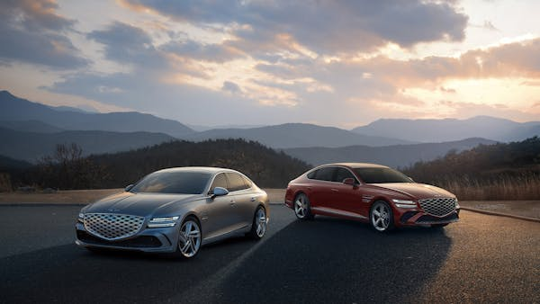
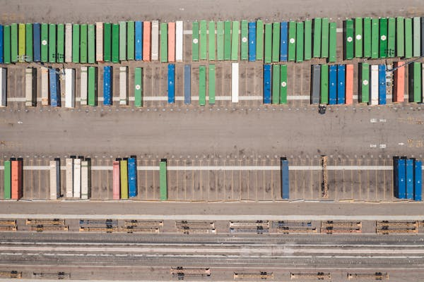
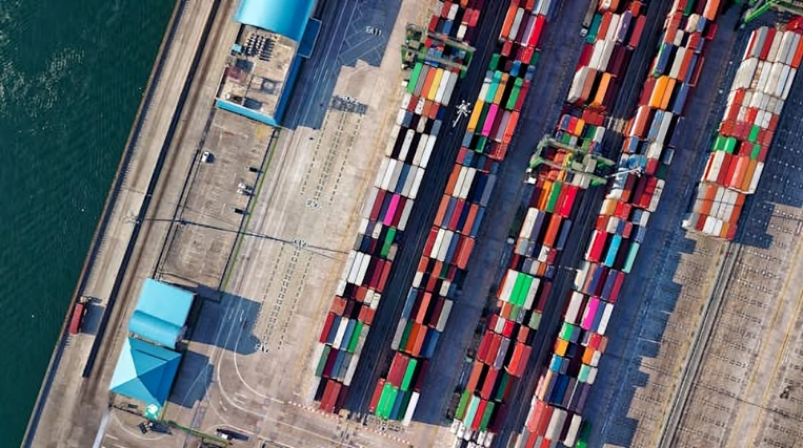

In Ghana, successive governments have intervened in the transport market through ventures such as the State Transport Corporation (STC), the Omnibus Service Authority (OSA), and the City Express Services (CES), among others, to address public transport needs in the country. Nevertheless, the objective of the Government to maintain these state-owned bus transits ruined owing to the usual pitfalls of state ownership. This compelled the Provisional National Defense Council junta to privatize STC and CES and to liquidate OSA in the 1990’s. Thus, almost all publicly owned and managed public transit in Ghana had ceased to exist during the late 1990’s (Trans-Africa, 2010; Yobo, 2014). By default, due to the state’s disinclination towards transit provision, the public transport industry in Ghana was deregulated. Behind Government’s decision was the abysmal performance of the state transit agencies, coupled with the Government’s pursuit of structural adjustment program around the 1990s. Public transport services were mainly replaced by private sector provision of paratransit, serving almost 95% of all public transport needs in Ghana, often using shared taxis and minibuses. Nevertheless, the dominance of these services retards economic growth and reduces the quality of life for commuters as the large number of vehicles required to meet demand causes congestion and parking issues and, ultimately, citizens suffer high levels of pollution and low levels of transit safety (Trans-Africa, 2010; IBIS, 2015).
In view of the above backdrop, the Government of Ghana (GoG) in 2003 sponsored the establishment of yet another version of state bus transit, conditioned on large government subsidies to assist the urban poor and working class to access efficient transit. The new bus transit system – Metro Mass Transit (MMT) Limited – is organized as a quasi-government operator of larger buses (Yobo, 2014). The MMT provides urban mass bus services, which is ‘usually unscheduled and often, on demand-responsive routes, filling gaps in informal transit provision’ (Poku-Boansi & Adarkwa, 2011).
The Ghana Automobile Market is segmented by vehicle type (passenger cars, commercial vehicles, two-wheelers, and three-wheelers), propulsion (internal combustion engine and electric vehicles), and type (new vehicles and used vehicles). The report offers market size and forecast for all the above segments in value (in USD billion). Due to the outbreak of COVID-19, the automobile industry in Ghana faced considerable delays in 2020 due to supply chain disruptions in major automotive production hubs worldwide, leading to delays in the shipment of critical auto components to carry out vehicle assembly operations. However, the automotive industry witnessed significant growth in 2021, likely enhancing the demand for vehicles during the forecast period.
The automotive industry in the country consists of retailers of imported used vehicles and a few distributors who deal with retailing newly manufactured vehicles. The country imports about 100,000 vehicles per year. The United States, Japan, and Germany are the country's leading importers. The automotive industry contributes a quarter of the country's GDP. However, by 2022, it anticipates accounting for at least 30% of GDP, and the primary reason for the increase may be the automobile industry. Ghana is the third biggest economic country among West African countries. It is likely to experience growth in the automotive industry during the forecast period, owing to the increase in “Made in Ghana” vehicles initiated by Kantaka Group in 2016 and the increasing skilled-work force in the Ghanaian automotive industry. Over the long term, the country's imports of automotive parts and components are likely to increase. The government has planned to reduce corporate tax to around 20-25% and remove special imports levied in the country under its manifesto. Ghana imports about 100,000 vehicles per year. About 90% are used vehicles, with an estimated value of USD 1.14 billion annually. The United States, Japan, and Germany are the leading suppliers. The automotive industry involves designing, producing, wholesaling, retailing, and maintaining motor vehicles. The automotive industry in Ghana is largely made up of retailers of imported used vehicles and a few distributors who deal in the retailing of new vehicles. The Ghanaian automobile market is segmented by vehicle type, propulsion, and type. Based on vehicle type, the market is segmented into passenger cars, commercial vehicles, two-wheelers, and three-wheelers. Based on propulsion, the market is segmented into internal combustion engines and electric vehicles. Based on the type, the market is segmented into new vehicles and used vehicles. The market size and forecast for each segment have been calculated based on value (USD billion).
In Ghana, successive governments have intervened in the transport market through ventures such as the State Transport Corporation (STC), the Omnibus Service Authority (OSA), and the City Express Services (CES), among others, to address public transport needs in the country. Nevertheless, the objective of the Government to maintain these state-owned bus transits ruined owing to the usual pitfalls of state ownership. This compelled the Provisional National Defense Council junta to privatize STC and CES and to liquidate OSA in the 1990’s. Thus, almost all publicly owned and managed public transit in Ghana had ceased to exist during the late 1990’s (Trans-Africa, 2010; Yobo, 2014). By default, due to the state’s disinclination towards transit provision, the public transport industry in Ghana was deregulated. Behind Government’s decision was the abysmal performance of the state transit agencies, coupled with the Government’s pursuit of structural adjustment program around the 1990s. Public transport services were mainly replaced by private sector provision of paratransit, serving almost 95% of all public transport needs in Ghana, often using shared taxis and minibuses. Nevertheless, the dominance of these services retards economic growth and reduces the quality of life for commuters as the large number of vehicles required to meet demand causes congestion and parking issues and, ultimately, citizens suffer high levels of pollution and low levels of transit safety (Trans-Africa, 2010; IBIS, 2015).
In view of the above backdrop, the Government of Ghana (GoG) in 2003 sponsored the establishment of yet another version of state bus transit, conditioned on large government subsidies to assist the urban poor and working class to access efficient transit. The new bus transit system – Metro Mass Transit (MMT) Limited – is organized as a quasi-government operator of larger buses (Yobo, 2014). The MMT provides urban mass bus services, which is ‘usually unscheduled and often, on demand-responsive routes, filling gaps in informal transit provision’ (Poku-Boansi & Adarkwa, 2011).
The logistics and transportation industry plays a vital role in the economy by facilitating the movement of goods and people. It encompasses various modes of transportation such as road, rail, air, and sea, as well as logistics services such as warehousing, distribution, and freight forwarding. In recent years, the industry has undergone significant transformation due to technological advancements, globalization, and changing consumer demands.
Infrastructure and housing are crucial components of any society, providing the foundation for economic development and the well-being of its citizens. In many countries, including Ghana, there have been significant efforts to improve infrastructure and housing to meet the growing needs of urbanization and population growth.
In recent years, there has been a focus on infrastructure projects such as road construction, bridge building, and public transportation systems to enhance connectivity and mobility. These projects not only improve the quality of life for residents but also stimulate economic growth by facilitating the movement of goods and people.
Additionally, efforts have been made to address the housing shortage through the construction of affordable housing units and the implementation of urban planning strategies. Access to adequate housing is essential for social stability and economic prosperity, and governments around the world are working to ensure that housing is accessible to all segments of society.